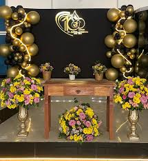

Ministério decoracao
Cuidando e ensinando nossas crianças sobre o amor de Deus.
Nosso Ministério decoracao é dedicado a proporcionar um ambiente seguro, divertido e educativo para que as crianças aprendam sobre Jesus. Acreditamos que é fundamental plantar a semente da fé desde cedo.
Líderes: Ester e Julia

Oferecemos aulas bíblicas adaptadas para diferentes faixas etárias, louvor, brincadeiras e atividades lúdicas que reforçam os valores cristãos. Nossos professores e voluntários são treinados e amam servir a essa geração.
Nossa Galeria de Fotos
Atividade de pintura na Escola Bíblica.

Momento da história bíblica no culto.

Festa de celebração do Dia das Crianças.
Eventos da Semana
- Quarta-feira: Estudo Bíblico decoracao (19:30h - Salão decoracao)
- Domingo:** Culto decoracao (10:00h - Sala Principal Kids)
- **Próximo Evento Especial: [Nome do Evento] em [Data]! Saiba Mais
Conheça Nossos Professores e Voluntários:

Seja um Voluntário no Ministério decoracao!
Para mais informações sobre o Ministério decoracao, entre em contato conosco!
Fale Conosco Voltar para Ministérios